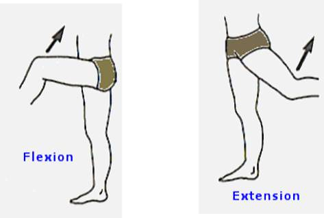
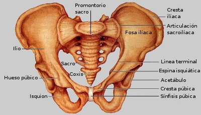

Índice de contenidos
- 1. Osteología
- 2. Artrología
- 3. Cintura pelviana y extremidades inferiores
- 3.1. Cintura pélvica
- 3.2. Muslos
- 3.3. Piernas
- 3.4. Pie
- 4. Miembros superiores y cintura escapular
- 4.1. Cintura escapular
OSTEOLOGÍA
El esqueleto es el armazón del cuerpo humano. Está formado por piezas duras, de naturaleza ósea: los huesos.
Los huesos se unen entre sí mediante partes blandas, que forman las articulaciones.
Las funciones del esqueleto son:
- De sostén
- De protección
De sostén porque en él se insertan numerosos músculos y de protección porque protege a otros órganos como el cerebro, médula, corazón, etc.
DIVISIÓN DEL ESQUELETO
Cabeza
- Cráneo
- Cara
Tronco
- Columna vertebral
- Costillas
- Esternón
Extremidades
- Superiores
- Inferiores
Cantidad de huesos: el número de huesos que integran el esqueleto es de 206. De ellos, 205 están articulados formando el armazón óseo del cuerpo humano. El hueso restante: el hioides, está situado en la parte superior de la región cervical, interviene en la formación del esqueleto osteofibroso de la lengua y no está articulado con ninguno de los otros huesos.
CLASIFICACIÓN SEGÚN DIMENSIÓN
Huesos largos
Predomina la longitud sobre el ancho y el espesor y poseen conducto medular. Ej.: Fémur y Húmero. En los huesos largos se considera un cuerpo o diáfisis y dos extremidades o epífisis: una superior y otra inferior.
Huesos planos
El ancho predomina sobre el largo y el espesor. Ej.: Ilíaco y Escápula.
Huesos cortos
Las tres dimensiones son proporcionales. Ej.: Tarso, Carpo. En las apófisis y rugosidades de los huesos se insertan ligamentos y músculos. Por los agujeros pasan arterias, venas y nervios.
ARTROLOGÍA
Es la parte de la anatomía que estudia las articulaciones. Se entiende por articulación el conjunto de partes blandas que unen dos o más huesos.
CLASIFICACIÓN DE LAS ARTICULACIONES
Articulaciones móviles
Son las más numerosas en el esqueleto. Ej.: hombro.
Articulaciones semimóviles
Son menos numerosas y de movimientos muy limitados. Ej.: Art. Sacroilíaca.
Articulaciones inmóviles
Poco numerosas, carecen totalmente de movimientos. Ej.: suturas del cráneo.
MOVIMIENTOS ARTICULARES
Los movimientos a los que pueden ser sometidas las articulaciones, según sea el género a que pertenezca, son:
- Deslizamiento
- Flexión y extensión
- Abducción y aducción
- Circunducción
- Rotación interna y externa
- Pronación y supinación
Deslizamiento
Es el movimiento más simple que realizan todas las articulaciones móviles. Consiste en el acto de deslizarse o resbalar una superficie ósea sobre otra. Ejemplo de este movimiento es el que realizan las apófisis articulares superiores e inferiores de las vértebras cuando flexionamos la columna vertebral.
Flexión y extensión

Son dos movimientos opuestos, porque uno es el contrario de el otro. Flexión: es “doblarse” por ejemplo,
cuando acercamos el muslo al abdomen, es una “flexión de cadera”. Extensión: es “desdoblarse” por ejemplo, cuando alejamos el muslo de el abdomen, es una “extensión de cadera”.
Abducción y aducción
Son también movimientos opuestos. La abducción es un movimiento por el cual el hueso se aleja del plano
medio o sagital del cuerpo.Por ejemplo, cuando apoyados en un pie movemos el muslo opuesto hacia fuera. La aducción es el movimiento opuesto, que acerca el muslo al plano medio del cuerpo. Los movimientos opuestos se denominan, en conjunto,
movimientos de oposición.
Circunducción
La combinación de los cuatro movimientos de oposición enunciados permite en el caso del muslo o del brazo realizar un
movimiento circular: la Circunducción. Este movimiento consiste en flexionar el muslo, realizar luego la abducción – alejándolo del plano medio del cuerpo-, extenderlo después hacia atrás y finalmente efectuar la aducción, acercándolo
al plano medio mencionado Los movimientos típicos de Circunducción se observan en – articulación coxofemoral, (cadera), y articulación escapulo humeral (hombro).
Rotación interna y externa
En este movimiento, un hueso gira alrededor de otro que le sirve de eje. Son ejemplos las
articulaciones de atlas con apófisis odontoides del axis. En este caso se realiza la rotación, cuando giramos la cabeza hacia los lados.
Pronación y supinación
En la rotación del radio con el cúbito se consideran dos movimientos de oposición: la pronación y la supinación. Pronación: se realiza cuando se lleva la palma de la mano hacia atrás o hacia adentro, por ej.: al colocar el tirabuzón en el corcho de una botella. Movimiento de pronación. Supinación: se lleva la palma de la mano hacia arriba o hacia fuera, por ej: al sacar el corcho de la botella.
CINTURA PELVIANA Y EXTREMIDADES INFERIORES
Están constituidas de modo que favorezcan la locomoción. Se hallan unidas al tronco por medio de la cintura de la pelvica y constan de cuatro porciones o segmentos:
Cintura pélvica

La CINTURA PÉLVICA, está constituida por tres huesos, los dos huesos COXALES o ILÍACOS, unidos directamente por delante
en un línea media llamada SÍNFISIS PÚBICA, y por detrás con el hueso SACRO, formando así un anillo osteofibroso llamado PELVIS, que sostiene las vísceras del bajo vientre.
En un principio y durante la niñez, puede observarse que
cada HUESO ILIACO está formado por tres piezas óseas, que más tarde se unen tan íntimamente que es imposible distinguirlas, a saber: el ILION, que constituye la parte superior y más desarrollada, el PUBIS por delante y el ISQUION en la
parte inferior.
En la cara externa de cada ILIACO y en la zona de unión de los tres huesos citados existe una gran CAVIDAD COTILOIDEA (Kotyle, vaso, eidos, forma) que aloja la cabeza del fémur, de donde resulta la articulación coxofemoral. Debajo
de la cavidad cotiloidea los arcos del isquión limitan un ancho orificio denominado agujero isquio- pubiano o agujero obturador.
Muslos

El muslo posee un único hueso, el FÉMUR, que es el más grande y largo del esqueleto. Mientras arriba termina en una cabeza voluminosa,
que juega dentro de la cavidad cotiloidea del hueso iliaco o coxal, concluye por debajo en dos cóndilos, que se articulan con la tibia, uno de los huesos de la pierna, formando la articulación de la rodilla.
La RÓTULA es un hueso
triangular de base superior, situado en su lugar gracias a los ligamentos y tendones articulares. Su papel principal es optimizar la función del cuádriceps.
Piernas
La PIERNA está formada por dos huesos largos y paralelos. La TIBIA por dentro y el PERONÉ por fuera.
La tibia articula directamente
con los cóndilos del FÉMUR que encajan en los platillos tibiales. En el extremo inferior articula con el ASTRÁGALO (uno de los huesos del tarso) y en su lado interno presenta una apófisis voluminosa, llamada MALEOLO INTERNO que corresponde
a la eminencia interior del tobillo.
El PERONE es mucho más delgado que la tibia, con la que articula por su epífisis superior y llega al pie formando una eminencia externa a la altura del tobillo llamada MALEOLO EXTERNO.
Pie
Los huesos del PIE están distribuidos en tres grupos: los del tarso, los del metatarso y los dedos.
El TARSO consta de siete huesos cortos:
el ASTRAGALO (articulado con la tibia y el peroné), el CALCANEO (el talón), el CUBOIDES, el ESCAFOIDE y tres CUNEIFORMES o CUÑAS.
El METATARSO compuesto por cinco huesos metatarsianos y los dedos están formados por CATORCE FALANGES:
primera, segunda y tercera, menos el dedo gordo que tiene la primera y la tercera, siendo notable que, en este caso, el dedo pulgar no es oponible a los demás.
MIEMBROS SUPERIORES Y CINTURA ESCAPULAR
Los huesos que conforman el miembro superior son: Clavícula - Escápula - Húmero - Cúbito - Radio - Carpo - Metacarpo - Falanges, y se divide en cuatro porciones:
CINTURA ESCAPULAR
Clavícula
Es un hueso situado en la parte superior y anterior del tórax con forma de S italica. Tiene dos extremidades, la interna se articula
con el esternón, la externa con el ACROMION del omóplato.
OMÓPLATO O ESCÁPULA
Está situado en la parte posterior y superior del tórax, la cara posterior está dividida en dos por la espina del omóplato cuyo vértice
es el ACROMION que se articula con la clavícula. En el ángulo superior externo hay una CAVIDAD GLENOIDEA en donde se articula la cabeza del HÚMERO. En el extremo superior de esa cavidad nace la APÓFISIS CORACOIDES. En la cara anterior
del omoplato se encuentra la fosa subescapular.
En la cara posterior del omoplato la fosa supraespinosa (encima de la espina), e infraespinosa por debajo de la espina. En dichas fosas se alojan los músculos del mismo nombre.
© Todos los derechos reservados.